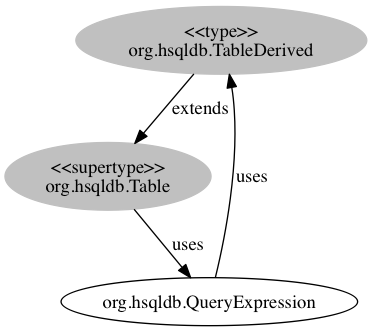

Dependency details
To see details, follow the link of the first class to display the source code, then look for occurences of the second class using in page search (usually ctrl-f) with the un-qualified name of the class (without package name)If there is no link, the source code could not be found online, please download it and investigate using a local copy.)Also note that the version used to generate the link is approximate as not all versions have online sourec code listings.
- org.hsqldb.TableDerived extends org.hsqldb.Table
- org.hsqldb.Table uses org.hsqldb.QueryExpression
- org.hsqldb.QueryExpression uses org.hsqldb.TableDerived